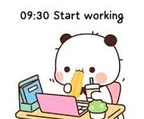

Skills
- Videography & Photography
- Event Management
- Public Speaking & Professional Presentation
- Project Management
- Content Creation & Strategy
- Media Production
- Artificial Intelligence (AI)
- Visual Creation & Thinking
- Aesthetic Sense
- Team Coordination
- Corporate Communications
- Research
Work Experience
FPT TELECOM
Internal Communications Intern
Jun 2023 – Dec 2023Assisted in planning and executing large-scale corporate events and managed official internal communication channels to drive employee engagement and foster corporate culture.
Core Responsibilities
- Event Management Support: Directly coordinated event logistics, handled staging setups, and managed on-site videography/photography production.
- Internal Channels Management: Drafted, edited, and published engaging content while tracking key performance metrics like reach and engagement.
- Creative Design: Conceptualized and designed media publications, marketing collateral, and exclusive event merchandise.
- Partners & Branches Collaboration: Acted as a primary point of contact to align operations with vendors, external partners, and regional branches.
Key Events & Contributions

CHO QUAN HEALTH STATION
Social Media Management & Content Creator
Online Freelance Job Scale: 1,900+ followersManaged end-to-end social media operations, creating educational health content and visual assets to grow the digital community and streamline public communication.
Core Responsibilities
- Content Strategy & Execution: Planned and developed monthly content calendars; drafted and scheduled posts to ensure consistent audience engagement.
- Media Design: Designed all visual assets, including social media posts, infographics, and promotional banners using Canva PC.
- Community Management: Managed information flow, handled customer inquiries via messages/comments, and maintained a professional brand voice.
- Content Curation: Researched and shared industry-relevant insights and useful resources to add value to the community.
Content Pillars & Key Metrics


Contact Me
Email: lethuythanh113@gmail.com
Phone: (+84) 944 281 959
Location: Ho Chi Minh City, Vietnam